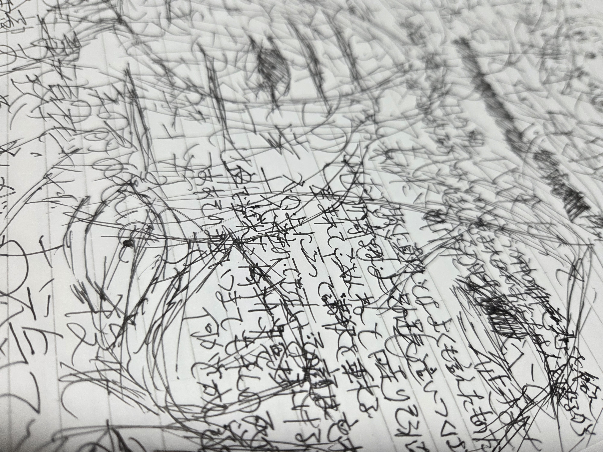

こんにちは、ザクザク食感です。
今日は出社だったので、大好きなかまみくというオモコロラジオを聞きながら仕事をしていた。
そこでかまどが話していたことが素敵だった。
32:00～
「記事を書いたり書籍を書いたりする中で、いろんな人に喜んでもらうことをモチベーションに作業をしていた。
今まで生きてきて、いろんなコンテンツに触れて楽しい気持ちになったりした。
創作をしていく中で、みんなにも自分と同じ楽しい思いをしてほしいと思って活動をしている。
ポジティブな復讐のように、みんなを自分と同じ目に遭わせてやりたいと思った。」
要約するとだいたいこのようなことを言っていた。
すごく共感できるなと思った。
何かしらの活動をしていく中で、人それぞれのモチベーションを持っていると思う。
単に好きなことをアウトプットしているだけだったり、人から注目を浴びたいという気持ちが原動力だったり、自分が思っていることを表現したかったり、いろんな動機があると思う。
僕は今挙げたすべてに若干当てはまるが、一番大きなモチベーションは、
「こんなに素晴らしい・楽しい・苦しいことが人生にはあるから、みんなにもそれに共感してもらったり、何かしらの発見をしてほしい」というものだ。
自分を愛せなきゃ人を愛せないとか、諦めが人生の本質だとか、世界は思ったより自分に関係なく進むこととか、それが救いだったこととか、対話が何より肝心なこととか、僕が生きてきて気づいたことをみんなにも共有したかった。
それに気づくために僕はいろんな人から影響を受けてきた。それらは今の僕を形作っていて、これからも僕と一緒に生き続けることになる。
だから今度は僕が誰かしらに影響を与えて、何かに気づいて視界が広がる助けになりたいと思っている。そうすることで僕は生き続けられる。
だから、このかまどの話にはすごく共感できた。そしてそれをパッと話せるかまど、かっけえ……と思った。
ということを書こうと思いながら会社を後にした。
帰る途中でもう一つ書きたいことができて、それの準備をしていたらいつの間にか寝ていた。
そしてひどい夢を見た。
前回の記事にも書いた気がするが、最近夢見が終わっている。トラウマが夢に現れるというより、夢自体がトラウマになりそうな夢ばかり見ている。
具体性はなく、かなり昔の僕の精神状態だけが夢の中でフラッシュバックして、僕が鬱から立ち直ったことが全部無駄になるような内容だった。
ここ最近の気づきで、今まで生きてきた中で体験したことすべてが繋がっていて、今の自分に至るまでに無駄なことなんて何一つなかったということが僕の中でかなり救いだった。（これもオモコロラジオで聞いた内容だ……原宿さんが言っていた）
今回の夢ではそれが反転して、お前はどれだけ変わったつもりでも結局根っこは同じなんだということを思い知らされた気がした。
家に一人なのが怖くて、すぐにツイッターを開いた。すると、タイムラインに以前のコミティアで繋がった更紗ケントさんの日記が載っていた。
更紗さんの新しい文だ！と思って開いた。
(https://sokokoko-bo.vercel.app/journals/20250911)
そこには「私がつくった何かしらが公共の場に置かれている時点で、それと接点を一瞬でも持った誰かに全く影響を与えないなんてことはきっとない。」と書いてあった。
たしかに！！！と思った。
ここで前述した内容を書きたかったことを思い出して筆を執った。やはりスタンド使いとスタンド使いはひかれあうんだ！
ありがとう更紗さん……あなたの文に触れて確実に影響を受けた人間がここにいます！
少し話が戻るが、夢の中で勝手に昔の自分を再演してしまって、その頃のどうしようもなさを感覚として思い出した。
そういえばその頃のノートが残ってるよな、と思い部屋を漁ると何冊か出てきた。
こんなページがあった。

今見ると痛くてありふれていて稚拙だと思うが、当時の僕は寄る辺なく苦しくて溢れそうだったことを思い出した。
今これを模倣した絵（絵なのか……？）は描けても、この負だが絶対値の大きい熱量を持って何か生みだすことはできないだろう。
きっと無駄じゃなかった。無駄じゃないはずなんだ……
それでは、さようなら。